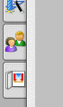
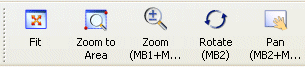

打开部件并访问角色资源板
-
打开 des7_intro。
如果您以前启动过 NX 8，则会话将会使用上一次会话时使用的角色，对于这个练习，您应该使用角色基本功能(推荐)。
-
在资源条上，点击角色选项卡
 。
。
-
钉住角色资源板。
-
在角色面板中，如果需要，点击系统默认以显示默认角色列表。

-
在角色列表中，点击角色基本功能(推荐)，然后在加载角色警告框中点击确定。
注意到这个角色的工具条使用大图标按钮，如下所示。

-
在角色列表中，点击角色具有完整菜单的高级功能，然后在加载角色警告框中点击确定。
注意到这个角色使工具条按键的大小发生变化，并且使更多的命令可用。